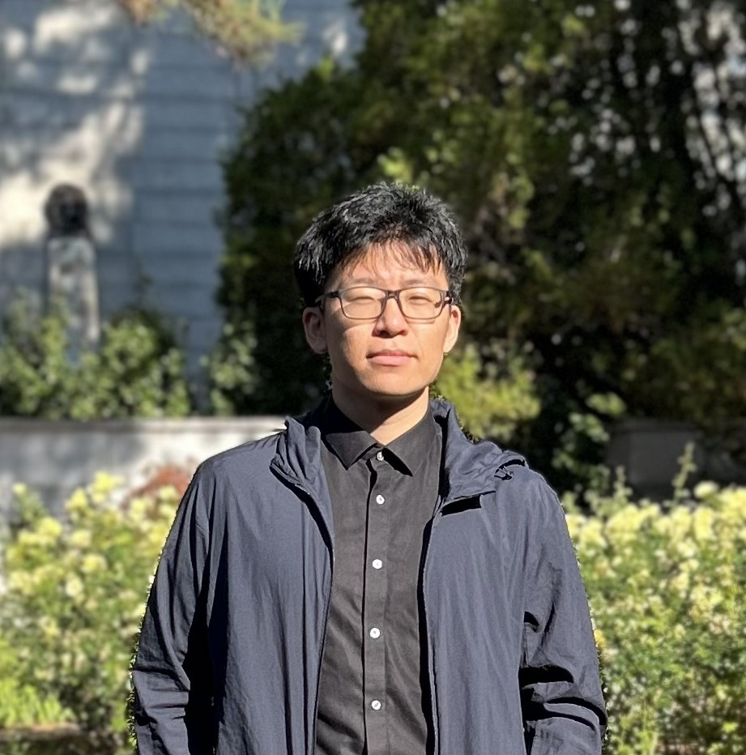

Hanyu Wang [CV]

Hanyu Wang is a PhD student at UCLA in the department of computer science tutored by Prof. Jason Cong. Hanyu is broadly interested in mathematical optimization problems in electronic design automation. He graduated from Shanghai Jiao Tong University in 2021 and has worked with Prof. Weikang Qian on logic synthesis since 2019.
Publications
Presentations
Projects
Electrical and Computer Engineering
Computer Science
Mathematic